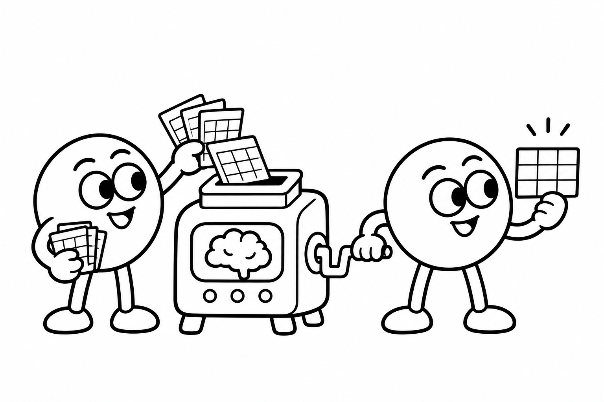

Learning across tables
Tabular
foundation
models
What if the model had already
learned how to learn?

What to take away
Your table is evidence.
The pretraining tasks supply assumptions.
For PFN-style models, the Bayesian connection is more than an analogy. Pretraining aims to learn a predictor that approximates posterior predictive inference under a task prior. The new table changes the prediction through context; it need not change the network weights.
| Quantity | Where it comes from | When it changes |
|---|---|---|
| Network weights θ | Pretraining across tasks | During pretraining; fixed in standard in-context prediction |
| Labeled context D | Your prediction task | When examples change, or a new CV fold is evaluated |
| Prediction qθ | Computation using x* and D | When the query or context changes |
The worked training and attention calculations come from a real miniature PFN with one attention head and a two-rule task generator. Its architecture and scope are deliberately small. Inspect the PyTorch source and saved model trace.
The opening bear comparison measures a depth-two tree, a random forest and TabICLv2 on the same simulated encounters, with ten continuous distractors. The later experiment diagnoses XGBoost’s interaction search. It does not measure TabPFN’s attention or explain the internal computation of TabICLv2. Inspect the results and reproducible experiment.
The 2025 Nature paper connects this mechanism to a richer synthetic task generator, attention across features and rows, and evidence on small datasets. Its distractor experiment motivates our bear test; it does not measure this particular simulation. Read the paper guide and benchmark qualifications.
The two-world example is exact Bayesian arithmetic, computed in the page. It is an original teaching illustration, not a TabPFN benchmark or a claim about its internal representations.